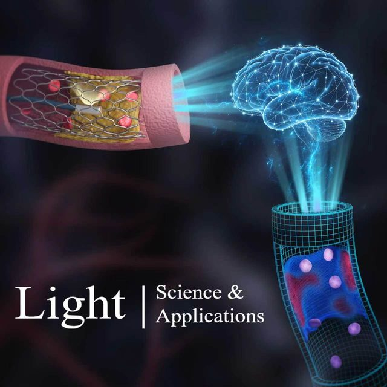

From intravascular imaging to adaptive vascular care: intelligent photonics and digital twins in panvascular disease
Light: Science & Applications · 4 August 2026
A roadmap connecting intravascular imaging and intelligent photonics with computational vascular representations for more adaptive panvascular care.
DOI: 10.1038/s41377-026-02410-6